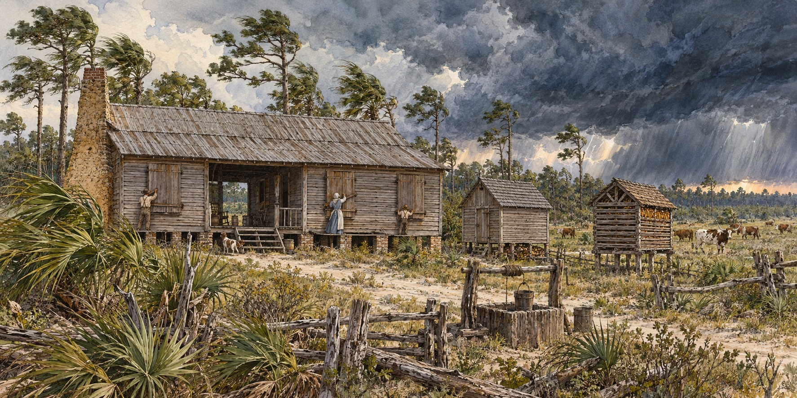

Surviving a Storm in a Cracker Cabin
How Pioneer Families Prepared Their Homes, Animals, and Food Before a Hurricane

Pioneer Florida families had to prepare for storms with the materials, food and information already close at hand. This article considers how their houses, livestock practices and stored supplies might have helped. Where no pioneer-era hurricane account is cited, these connections are interpretations of established daily practices rather than documented instructions from a particular family.
A House Already Built to Bend With the Water
Raised floors, set well above grade, were never just a comfort against Florida’s humidity. They were a practical response to a landscape that flooded constantly, letting water pass beneath a house rather than through it. Raised floors could help with shallow flooding, but did not make a cabin safe from storm surge, fast-moving water or powerful winds.
Some everyday features could also serve storm preparation. Wooden shutters, fitted over window openings that in many early cabins held no glass at all, could be closed against wind-driven debris in minutes. A detached kitchen, connected by the open breezeway of the dogtrot cabin, kept cooking fires away from the main living space, and during a storm meant a fire in one building did not automatically threaten the other.
A Chimney Built to Walk Away From the House
The mud-cat chimney, a wooden frame packed with clay, was designed to be pulled away from the house in case of fire rather than let flames spread into the wooden walls. As an unplanned benefit in high winds, a chimney built as an independent structure, only loosely joined to the cabin, could shift, lean or partly collapse without pulling the cabin down with it. This is an inference from the design, not a documented storm account.
Letting the Cattle Go
Cracker families lived within an open-range cattle culture, with herds roaming unfenced scrub and prairie. Their routine practice may have shaped storm decisions, but it is not evidence of one standard hurricane response. Modern UF/IFAS guidance often favors secure open pastures with access to higher ground over barns liable to collapse. That advice concerns managed pasture and does not recommend simply releasing animals onto roads or unfenced land.
What Was Already in the Smokehouse
The smokehouse cured and stored meat for months, and the elevated corn crib protected grain from moisture and vermin. Together they were a standing food reserve, so a family sensing a hurricane was rarely starting from nothing. But there was no last-minute shopping trip. A family had what the smokehouse, crib and garden held, perhaps a hastily gathered armful of firewood, and whatever water the well or a nearby spring could still provide once the weather turned.
Water, the Quiet Danger
Pioneers relied on hand-dug wells and natural springs. Flooding could contaminate these supplies, creating danger after the winds had passed. Boiling was available as a way to reduce many microbial hazards, but it could not remove salt or all chemical contamination. Stored clean water could therefore be valuable. Evidence for a specific family’s storm-storage practice would require an account from that place and time.
Quick Facts
| Storm discussed | Hurricane; local dialect claim omitted pending documentation |
|---|---|
| Raised floors | Raised living space; vulnerable to dangerous flooding and wind |
| Mud-cat chimney | Wood-and-clay chimney described in Florida pioneer housing |
| Shutters | Wooden, over open window frames; glass was a later addition |
| Detached kitchen | Linked by dogtrot breezeway; kept fire away from the main house |
| Food reserve | Smokehouse and corn crib |
| Water | Wells and springs could be contaminated by flooding; boiling does not remove salt or all chemicals |
| Cattle | Open-range tradition; specific storm practices are inferred |
Did You Know?
The mud-cat chimney was made to be pulled away from the house in a fire.
Modern extension advice emphasizes secure pasture, higher ground and avoiding unsafe barns.
Vocabulary
Dogtrot: a cabin plan with an open breezeway between two enclosed sections.
Open range: land where cattle roam unfenced.
Discussion Questions
Which features of a Cracker cabin protected a family from storms even though they were built for everyday life?
How might secure pasture and access to higher ground reduce risks to livestock?
Related Articles
FLH-0020 — How Florida Pioneers Predicted Storms
FLH-0021 — Hurricane Warnings Before Radio
Sources
Florida-Backroads-Travel.com. “Florida Cracker: Pioneers in a Rugged Country.” florida-backroads-travel.com
Wikipedia. “Florida Cracker Architecture.”
Silver River Museum, Silver River State Park. “Pioneer Village Overview.” silverrivermuseum.com
Ocala Style Magazine. “Pioneer Cabins Through the Years.” ocalastyle.com
Cracker Country, Florida State Fairgrounds. crackercountry.org
Sanibel Historical Museum. “History of a Florida ‘Cracker.’” sanibelmuseum.org
UF/IFAS Extension. “Hurricane Season Readiness for Livestock Producers” and “Prepping Livestock During Hurricane Season.” blogs.ifas.ufl.edu
WUFT. “Preparing Livestock Amid Hurricane Ian.” wuft.org
Silver River Museum — Pioneer Village